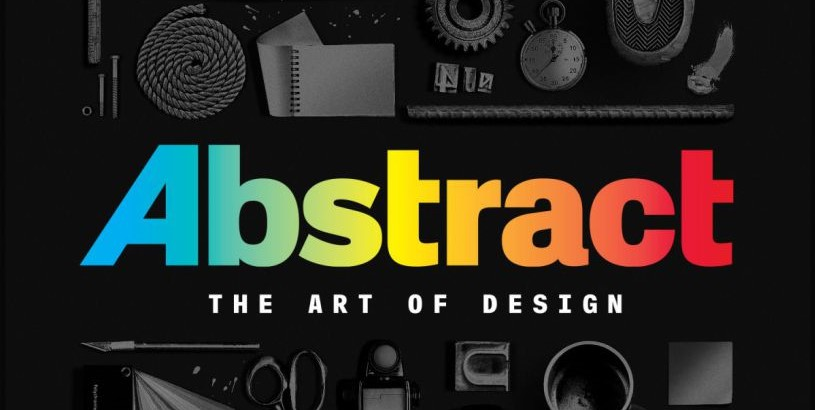

Abstract: The Art of Design

Abstract is een Netflix documentaire reeks, waar iedere aflevering een spraakmakende designer wordt gevolgd. Het zijn hele diverse designers, van de architect Bjarke Ingels, tot de Lead Designer van Nike: Tinker Hatfield. Het is heel interessant, omdat je een blik in het leven van de ontwerpers krijgt, maar ook hun visie en passie. Je krijgt bij alle designers een ander verhaal, die uiteindlijk toch heel veel met elkaar overeen komen.
Stan Lee

Ik hou heel erg van verhalen. Lezen, gamen, series of films kijken, ik vind het allemaal geweldig. Dit is een van de redenen dat Stan Lee een van mijn helden is. Hij heeft zo zijn stempel gezet op de stripboek wereld, dat letterlijk iedereen zijn naam kent. En volgensmij alleen in positieve zin. Als ik later groot ben zou ik willen streven iemand als Stan Lee te zijn.
Kintsukuroi

Kintsukuroi is meer een begrip als een echt individueel ontwerp. Kintsukuroi is Japans voor:'Gouden Reparatie' wat heel letterlijk spreekt. Het is de kunst van het repareren met goud. De filosofie achter deze opmerkelijke vorm van knst is het omarmen van imperfecties. Als er bijvoorbeeld een vaas kapot gaat, word deze weer in elkaar gezet met naden van goud.